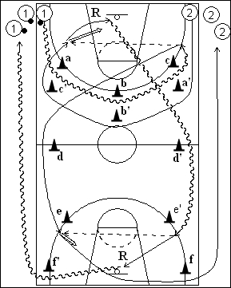

Catégorie : SHOOTS (Sh-010)
Déroulement
- Deux files de joueurs aux extrémités d’une baseline. Les joueurs de la file 1 ont un ballon.
- Les premiers joueurs des files 1 et 2 partent en même temps. Le premier 1 dribble autour des cônes intérieurs (a, b et c), tandis que le premier joueur de la file 2 court autour des cônes extérieurs (a’, b’ et c’). Le premier joueur de la file 1 passe alors au premier de la file 2 qui shoote, effectue son rebond et dribble vers le panneau opposé en passant derrière les cônes d’ et e’ pour ensuite passer au premier joueur de la file 1 qui a contourné les cônes d et e. Le premier joueur de la file 1 shoote et le premier joueur 2 effectue le rebond.
- Après le rebond, 2 dribble derrière le cône f’ et va en 1, tandis que 1 passe derrière le cône f et va en 2.
Coaching points
- Ce sont donc les joueurs de la file 2 qui effectuent les deux rebonds.
- Insister pour que les deux joueurs concernés partent simultanément.